Lecture #5 : Learn About the Basics of Web Pages, Computer Networks, and the Internet
In the first phase of web designing, we would review the basics of computer networks and the internet, and see how web pages are written with HTML.
Computer Networks
In the 4th lecture, we discussed how computers communicate with each other. A "comupter network" refers to a mechanism which enables a group of computers to comminicate with one other using a common protocol. In a computer network, each computer is refered to as a "host".
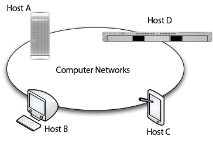The Scale of Computer Networks
Speaking of the scale of computer networks, some may be "small" while others may be "large". The most simplistic network is where 2 hosts are linked together directly by a cable.
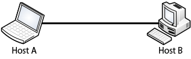A slightly bigger network may be refered to the one in the computer room (e.g. K18) where this lecture is taking place. In the computer room, all of the hosts (about 40 of them) are linked together using a device called a "hub".
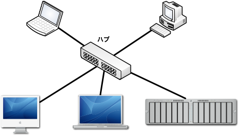An even bigger network would be the CNS (Campus Network System) of SFC.
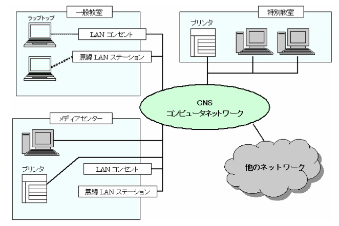The type of networks we have discussed are called LAN (Local Area Network) in general. LAN is commonly refered to as a computer network within a limited range, such as a campus or a building.
On the other hand, computer networks which cover a large area are called WAN (Wide Area Network). For example, a network which provides a link between 2 different university campuses may be reffered to as a WAN.
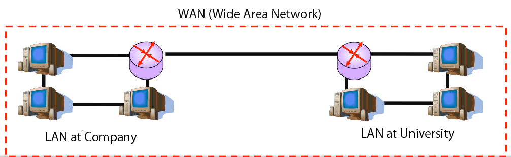Internet
WAN may be used to expand the entire scale of the network by connecting individual networks with each other.
The SFC Network (CNS)
The Keio University Network
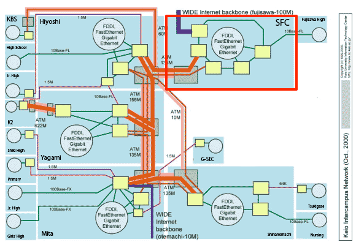JUNET
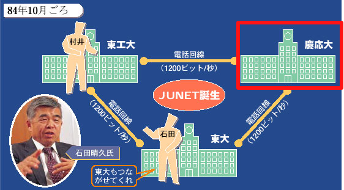
The Internet

As shown in the diagram, the internet is a huge network which inter-connects smaller networks managed by various organizations, companys, schools around the world. It enables communication between hosts around the globe using IP (Internet Protocol), and it is supported by various systems such as the DNS (Domain Name System), as we discussed in the previous lectures.
The history and technologies of the internet is well discussed by Prof. Jun Murai in his lecture, "Internet" (held every spring semester). You may attend his lecture, or you may also view the archives under KEIO SFC on iTunes U.
WWW - World Wide Web
World Wide Web (a.k.a. Web) is a framework to send and receive text, images and video clips over the internet. The basic operation is based on the server-client model, where the web servers processes and returns the contents to the client PC, based on the requests issued by web browsers.
Web browser simplifies the communication between the web servers, analyzes the code written in HTML or JavaScript, and renders it into "web pages" which humans can understand.
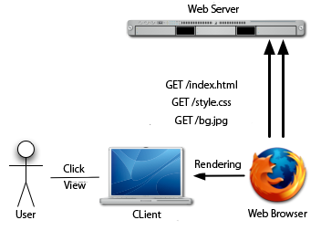- The web browser makes a request to the web server. (HTTP Request)
- The web server looks for the file "index.html".
- The web server returns the file (index.html) to the web browser. (HTTP Response)
- The web browser analyzes the HTML code and renders it into a "web page".
URL (Uniform Resource Locator)
URL (a.k.a. URI [Uniform Resource Identifier]) is a very important factor in the web. It consists of mainly three parts, the scheme, the host name, and the file path, each having its own important roles.
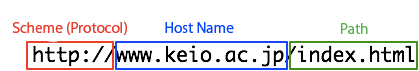
Scheme (Protocol)
The scheme indicates which protocol to use upon receiving the data. When browers use common HTTP, the scheme would be "http://". On the other hand, when browsers prefer encrypted communication over SSL (Secure Socket Layer), the scheme would be "https://"．
Host Name
The host name indicates the name of a web server to communicate with.
File Path
The file path indicates the location of the file within the server. It may contain a directory name. In such cases, each directory must be separated by a slash ("/"). Most of the web servers would return "index.html", if only the directory name was indicated. For example, when a browser sends out a request for "http://www.keio.ac.jp/", the web server would automatically return "http://www.keio.ac.jp/index.html".
Other than file names, programs may also be requested in the file path. In that case, parameters may be passed using the following format: "?param1=value1¶m2=value2¶m3=value3&".
By using this technique, it is possible to change the responce dynamically. For example, the yahoo search engine dynamically changes its results based on the URI: "http://search.yahoo.com/search?p=[keywords]".
Publishing Your Web Site
You can easily publish your web site using the CNS web service.
CNS Web Service
On the CNS, you may publish your web site by placing the contents in a directory called "public_html" under your home directory. If it doesn't exist, create one. Once you have placed the contents under "public_html", you may access it through a web server called web.sfc.keio.ac.jp. The contents you've placed may be requested with the URL: "http://web.sfc.keio.ac.jp/~[CNS account name]/". If you have any directories under "public_html", you may access them by indicating the relative path.
If you are using the iMac in the computer room, create the "public_html" directory under "CNS_HOMEDIR". For example, say there was a student whose account name was "s12345ab". If that student placed a text file (test.txt) under "public_html", it may be accessed by the URL: "http://web.sfc.keio.ac.jp/~s12345ab/test.txt"
Excersise
- Create the "public_html" directory in your home directory, and place a text "test.txt" under it. Make sure you can access it using the web browser.
- Check and see if you can access it from other PCs in the same way.
- Download the web site template file from the link below.
- Unpack the ZIP file and place the contents under your "public_html" directory. Make sure you can see the contents using the URL: "http://web.sfc.keio.ac.jp/~[CNS Account Name]/"
Debugging With Firebug
Let's try real-time debugging with Firebug.
What's Firebug?
Firebug is a plugin for the Firefox web browser. It is a web development tool which enables developers to edit and debug HTML/Javascript/CSS codes in real-time. You can download it from the following web site: https://addons.mozilla.org/en-US/firefox/addon/firebug/
Normally, when you debug web pages, you are required to edit, save, and upload HTML/CSS files, before you can see their final view. This can be very time consuming. However, if you use Firebug, you can edit the codes within your web browser, and see the results in real-time.
This can be very useful, but Firebug doesn't have the ability to save the results to your HTML/CSS file. In order to apply the results to your files, you need to manually edit the file. Firebug is equipped with various features inculuding communication logs and Javascript debugging, but in this lecture, we would focus on using it to view the source codes.
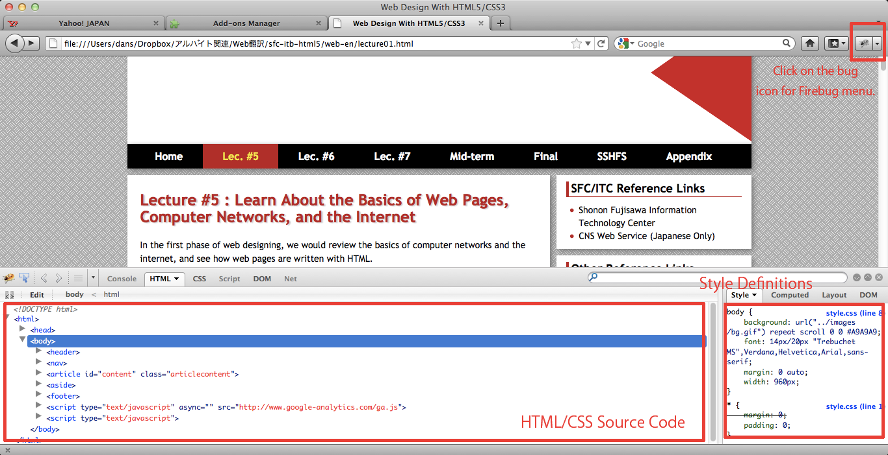Selecting Elements
In order to select an element, right-click on the browser screen and select "Inspect Element". The lines of code indicating the selected element would appear on the left-hand side. When you click on the code, it would become editable. When something is changed within the code, it would be applied to the view instantly. Feel free to play around, and see how things change throughout the page.
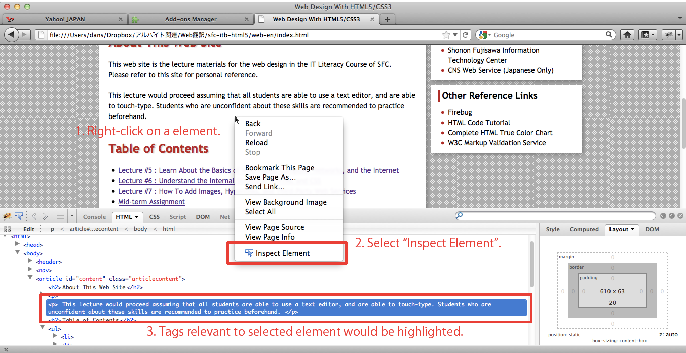Editing Styles
On the right-hand side, the style definitions which are applied to the selected element are listed. Again, feel free to play around with the "font-size" and "color" attributes, and see how things change.
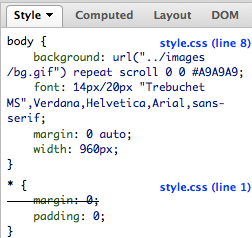Editing Layouts
When you change the tab on the right-hand side to "Layout", the size and margins of the selected element would appear. Again, play around with the values and see how things change.
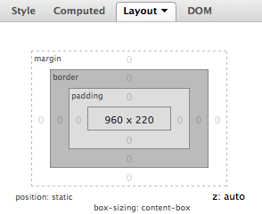The details of CSS style definitions would be discussed later on, but if you have some time left, try to figure out what they refer to.
HTML Style Sheets - HTML Code Tutorial
In This Section...
You have learned how to publish your HTML files using the CNS web service. You are likely to use this function very often, so make sure you're good with it. You have also experienced code editing with Firebug. The details of HTML/CSS coding would be dicussed later on.